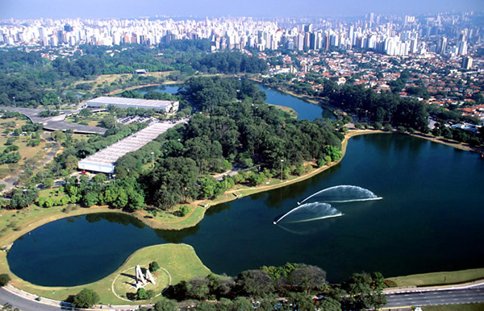
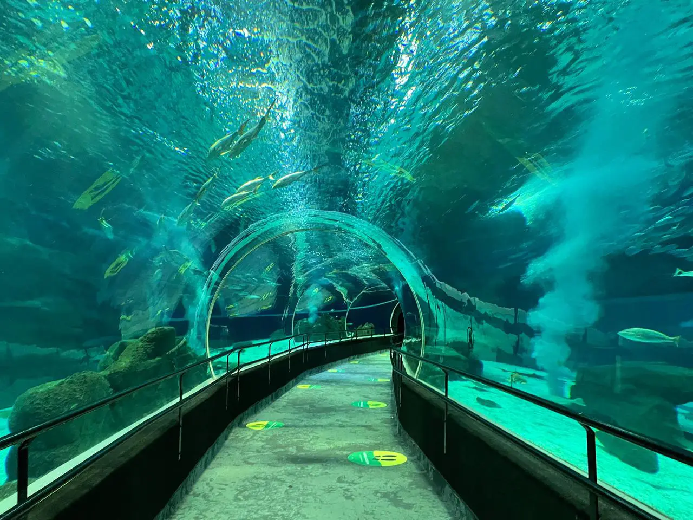

Maior Roda-Gigante da América Latina
A aguardada "Roda São Paulo", a maior roda-gigante da América Latina,
foi aberta ao público em 19 de agosto, informou a empresa São Paulo Big
Wheel.
A 91 metros de altura, a atração está localizada no parque Cândido Portinari,
ao lado do Villa-Lobos e às margens do Rio Pinheiros, ocupando uma área de 4,5
mil metros quadrados. Ela terá 42 cabines de observação climatizadas, com
monitoramento por câmeras, interfones, wi-fi e capacidade para até 10 pessoas cada.
Ela ainda terá iluminação cênica, que poderá ser programada, e
tecnologia "continuous loading". Esse tipo de dispositivo permitirá
o embarque e desembarque de pessoas sem interromper o percurso — o que
deve contribuir para não formar grandes filas.
Leia mais

Natal no Parque Ibirapuera tem patrocinadores confirmados
Desde o dia 3 até o dia 26 de dezembro de 2022, o
Parque Ibirapuera abre as portas para o seu terceiro projeto de
Natal realizado pela Urbia, gestora do Parque, com idealização e
produção da Innova AATB.
Leia mais

Aquário de São Paulo: um passeio imperdível!
No Aquário abaixo de zero os pinguins, com seu jeito divertido
de caminhar e nadar, agradam em cheio a criançada, dividindo a atenção com
os ursos polares. Ao todo, 15 mil m² abrigam mais de 300 espécies diferentes.
Os visitantes poderão ver ainda os coalas que fazem companhia aos cangurus,
woombats e equidnas do setor “Austrália”.
Leia mais
Zoológico de São Paulo: um guia de visitação para se conectar com os animais
Se você já vai para a capital paulista em sua próxima viagem e precisa
de sugestões de atividades, então considere colocar o Zoológico de
São Paulo no seu roteiro. Inaugurado em 16 de março de 1958, o maior
zoológico da América Latina abriga atualmente mais de 3 mil animais e
atua na preservação de algumas espécies ameaçadas de extinção. Assim,
confira dicas e informações uteis para desfrutar do local.
Leia mais